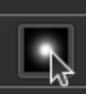

Le résolveur de l'afficheur FITS est utilisé pour résoudre l'image chargée dans l'onglet de l'afficheur FITS. Cela ne fonctionne qu'avec StellarSolver. Vous obtenez les coordonnées en AD et DEC du centre de l'image, son échelle, l'angle de rotation et le nombre d'étoiles détectées. Son utilisation principale est le débogage de problème dans Ekos, bien que l'information affichée peut être utile. Les boutons et affichage sont décrits ci-dessous.
Bouton Résoudre. Appuyer sur ce bouton déclenche la résolution. En cours de résolution, ce bouton devient un bouton Interrompre.
Échelle : la case à cocher Utiliser Échelle force le résolveur à utiliser approximativement l'échelle indiquée de l'image ou du pixel. Elle est saisie dans la boîte et ses unités sont soit des degrés, soit la largeur de l'image en minutes d'arc ou en secondes d'arc par pixel. Quand une résolution aboutit, la valeur dans la boîte est remplacée par l'échelle de la solution.
Position : la case à cocher Utiliser Position force le résolveur à chercher près des coordonnées en AD et DEC données. L'étendue de la recherche est donnée par l'utilisateur dans la boîte Rayon, en degrés. Veuillez noter que l'AD doit être donnée en heures-minutes-secondes, par exemple 13h, et la DEC en degrés-minutes-secondes, par exemple 85. Quand une résolution aboutit, les valeurs de la boîte sont remplacées par les coordonnées de la solution. De plus, le champ Angle sera rempli par la solution de l'angle en degrés.
Utiliser Position de la carte du ciel : ce bouton, situé juste sous la boîte Utiliser Position rempli les boîtes AD et DEC avec les coordonnées actuelles du centre de la carte du ciel.
Profil : le menu Profil permet de choisir un préréglage pour StellarSolver parmi ceux utilisés dans le module Alignement et qui sera utilisé pour la résolution. Ce point est discuté plus en détails ci-dessous.
Solution : la section Solution affiche le nombre d'étoiles trouvé et le temps pris pour la résolution. Les valeurs de la solution pour l'AD, la DEC, l'échelle et l'angle sont affichées dans les boîtes supérieurs.
Image : avec le bouton Marquer Étoile activé au-dessus de l'affichage de l'image, les étoiles détectées seront entourées de rouge.

Cet outil permet à l'utilisateur de corriger les erreurs de résolution.
La case à cocher KStars -> Réglages -> Développeur - Enregistrer les images d'alignement en échec.
Une image difficile (dont l'alignement a échoué) pourrait être retrouvée et chargée dans l'afficheur FITS.
Cette image pourra être inspectée afin de déterminer s'il y existe des problèmes évidents.
En cliquant sur Résoudre dans cet outil montrera le nombre d'étoiles détectées et l'utilisateur pourra ensuite décider si le problème se situe au niveau de la détection et essayer avec d'autres paramètres.
L'utilisateur pourrait également téléverser cette image sur le site astrometry.net pour obtenir l'échelle et la position (ou simplement voir si cette image est problématique).
Il pourrait modifier la valeur des paramètres Utiliser Position et Utiliser Échelle pour utiliser des valeurs très précises pour ces contraintes (ou simplement les désactiver) pour voir si ce sont ces valeurs qui posent problème ou les ajuster dans le profil d'alignement utilisé.
Pour inspecter ou modifier le profil, l'utilisateur se rendra sur l'onglet Alignement d'Ekos, et, dans le menu des options, sélectionnera les options pour StellarSolver, en faisant attention que les bonnes options du profil sont bien sélectionnées et cliquera sur le stylo pour l'afficher ou le modifier.